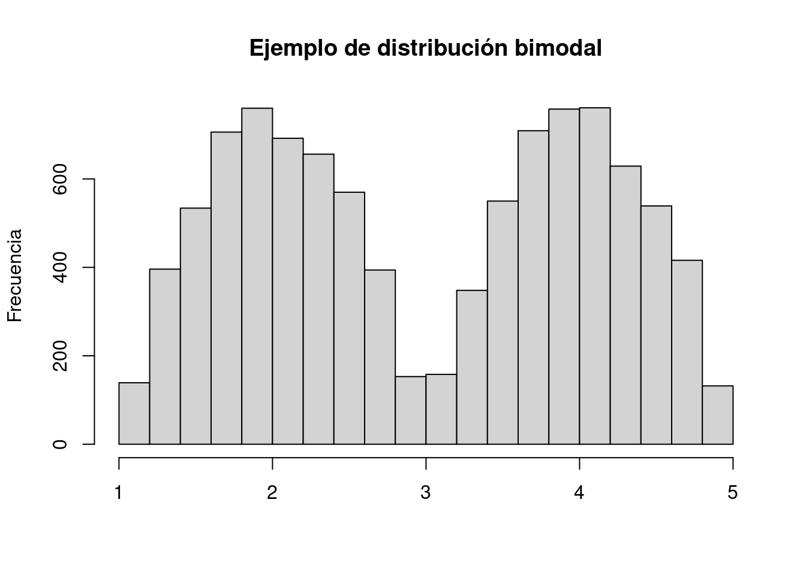
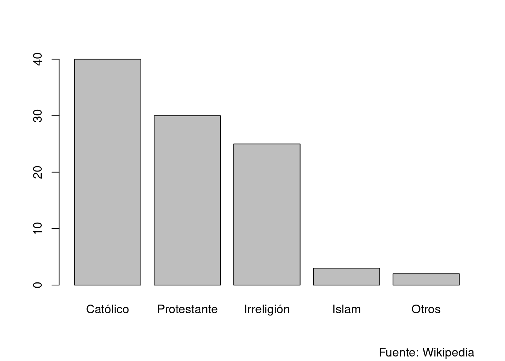
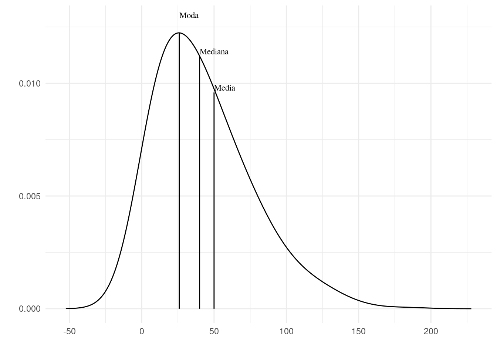
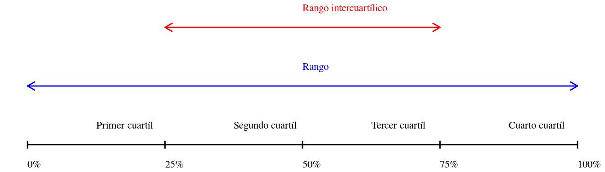
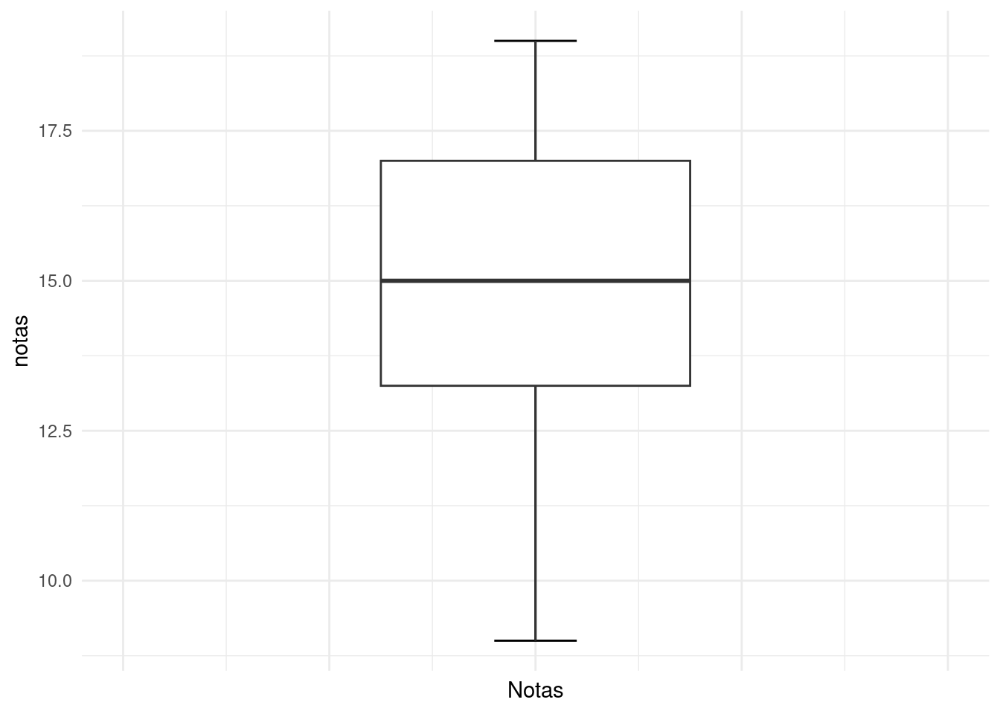
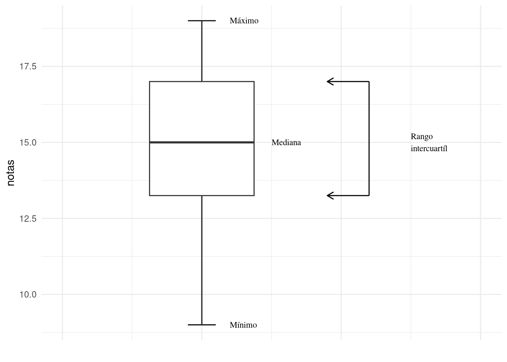
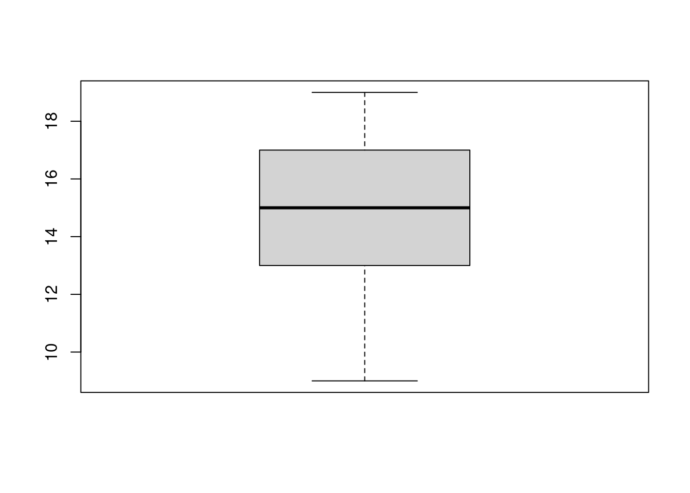

x = c(15, 12, 11, 18, 15 , 15)
mean(x)#> [1] 14.33333En el capítulo 2 vimos que resumir los datos y generar visualizaciones nos permite entender mejor la estructura y algunas propiedades de un conjunto de datos, como son sus vales más frecuentes y rango de observaciones. En este capítulo desarrollaremos algunas medidas cuantitativas más precisas de estas propiedades. Específicamente desarrollaremos medidas de centralización o tendencia central y dispersión.
La centralización o tendencia central de un conjunto de datos es uno o un número reducido de valores que representan todo el conjunto.
Existen tres medidas de centralicación: la media, la mediana y la moda. A continuación las vamos a definir y ver cómo se calculan y luego vamos a considerar cuándo se debe usar cada una de ellas.
La media es seguramente la medida de centralización de uso más frecuente 1. Se conoce también como el promedio y, más técnicamente, la media arithmetica. La media se obtiene por la suma de las observaciones dividido por el número de observaciones. Por ejemplo si queremos sacar el promedio de seis observaciones de una variable: 15, 12, 11, 18, 15 y 15; tenemos:
\[ {{15 + 12 + 11 + 18 + 15 + 15}\over{6}}={86\over6}=14,33 \tag{3.1}\]
En el caso de nuestra muestra de notas para de capítulos anteriores tenemos:
\[ {{ 15 + 12 + 11 + 18 + 15 + 15+ \\ 9 + 19 + 14 + 13 + 11 + 12 + \\ 18 + 15 + 16 + 14 + 16 + 17 + \\ 15 + 17 + 13 + 14 + 13 + 15 + \\ 17 + 19 + 17 + 18 + 16 + 14}\over{30}}={448\over30}=14.93 \tag{3.2}\]
Ya con el cómputo en Ecuación 3.2 nos damos cuenta de que si bien es posible hacer estos cálculos a mano puede resultar bastante engorroso. Además con tantos números dando vuelta sube la probabilidad de un error de tipeo y con lo cual sacaríamos un resultado incorrecto.
Ejemplo 3.1 (La media) Por suerte es bastante sencillo sacar la media con R. Para los dos ejemplos anteriores tenemos:
x = c(15, 12, 11, 18, 15 , 15)
mean(x)#> [1] 14.33333y
notas = c(15, 12, 11, 18, 15, 15, 9, 19, 14, 13, 11, 12, 18,
15, 16, 14, 16, 17, 15, 17, 13, 14, 13, 15, 17, 19,
17, 18, 16, 14)
mean(notas)#> [1] 14.93333En textos de matemática y estadística se usa con frecuencia llaves para significar un conjunto, de modo que los datos del primer conjunto se expresaría así: x = {15, 12, 11, 18, 15 , 15}.
Una notación compacta para significar la suma de las observaciones en una variable es \(\Sigma\): la letra griega sigma, en mayúscula.
Para significar el número de observaciones de usa N, de número.
Así se puede definir la media de manera compacta así:
\[ {\Sigma{x}}\over{N} \]
También se usa una barra vertical sobre el nombre de la variable para significar la media (o promedio aritmético): por ejemplo: \[\bar{x} = 14,33\]
Entonces en general tenemos:
Definición 3.1 (La media) \[ \bar{x} = {\Sigma{x}\over{N}} \]
que se podría leer: «la media de equis es igual a la suma de las observaciones de equis sobre el número de observaciones».
Otra medida de centralización es la mediana (también: valor mediano). Para obtenerla ponemos nuestros datos en orden ascendiente y sacamos el valor que está justo en la mitad. Por ejemplo: si queremos sacar la mediana de {15, 12, 11, 18, 15, 15, 9}, primero los ordenamos: {9, 11, 12, 15, 15 ,15, 18}. Vemos que hay siete observaciones con lo cual la mediana es la observación que está en cuarta posición, es decir que la mediana de estos datos es 15. Si el conjunto de datos tiene un número par de observaciones, no va a haber una observación justo en el medio. En ese caso se toman los dos valores del medio, se los suma y se divide por dos. Por ejemplo: {8, 8, 9, 11, 12, 15, 15 ,15}. Acá tenemos ocho observaciones (ya ordenados) tomamos los dos valores de la posición cuarta y quinta, los sumamos y dividimos por dos: \({11+12\over2}=11,5\).
El valor mediano, o la mediana, se denota en notación matemática con una tilde como la que se usa en la letra ñ en español. Al igual que la barra para la media, se coloca por encima de la variable, así: \[\huge{\tilde{x}}\].
Ejemplo 3.2 (La mediana)
Podemos sacar la mediana de forma sencilla con R con la función median.
x = c(9, 11, 12, 15, 15 ,15, 18)
median(x)#> [1] 15y
x = c(8, 8, 9, 11, 12, 15, 15 ,15)
median(x)#> [1] 11.5La moda es la observación más frecuente del conjunto. Por ejemplo: {9, 11, 12, 15, 15 ,15, 18}. El valor 15 es la moda de estos datos.
A diferencia de las otras medidas de centralidad la moda no necesariamente es un valor único. Si tuviéramos por ejemplo: {2, 4, 5, 7, 7, 7, 9, 11, 12, 15, 15, 15, 18} hay dos valores con la misma frecuencia máxima. Tanto 7 como 15 aparecen tres veces. En este caso hay dos modas y hablamos de una distribución bimodal.
Vemos un ejemplo en el gráfico que sigue.

La selección de una medida de centralización depende de varios factores:
La media debería usarse solo para variables de escala de intervalo o de razón. Si los datos son ordenables, pero sin que se pueda hablar de distancias reales entre los datos la mediana es más apropiada. Y en los casos donde ni esto es posible la moda puede ser la única medida disponible. Por ejemplo: si decimos que Italia es un país católico estamos expresando la moda de la variable nominal «religión», y si decimos que Alemania es un país católico y protestante estamos expresando una distribución bimodal de la misma variable. Podemos observar en el gráfico que en realidad se podría hablar incluso de una distribución trimodal.

En cuanto a la forma de la distribución se favorece la mediana por sobre la media si la distribución es muy sesgada. Esto ocurre sobre todo si hay valores extremos o atípicos. Por ejemplo si tenemos los datos: {15, 12, 11, 18, 15, 15, 200} está claro que si calculamos la media el valor extremo (200) va influir mucho más que cualquier otra observación. En este caso la media es 40,85 y el mediano 15. El primer valor (40,85) no es muy representativo de la muestra ya que no corresponde a ninguna observación y está lejos de cualquiera de ellas. El mediano, en cambio, puede resultar una mejor medida en este caso.

Para darnos cuenta de cuál de las medidas puede ser la más adecuada si tenemos datos por lo menos numéricos podemos sacar las tres medidas y ver qué tanto de asemejan unas a otras. Hay que tener en mente que cualiér distribución de datos reales va a tener un sesgo, la distribución perfectamente normal solo existe en teoría. Entonces debemos fijarnos si el sesgo que tenemos justifica el uso de una medida en espeficia. Por ejemplo, para nuestros datos de notas de dos grupos tenemos:
Vemos que hay muy poca diferencia entre las tres medidas por lo cual vamos a concluir que el sesgo observado no es lo suficientemente fuerte como para justificar el uso de otra medida que la media.
En la sección anterior desarrollamos varias medidas de centralización y cuál eligir para describir el valor «más típico» de los datos. Cuando calculamos medidas de dispersión estamos contestando la pregunta: ¿cuán típico es este valor?
Cuando tratamos con variables nominales, como el ejemplo de religión en Alemania de la sección anterior, lo mejor que podemos hacer el indicar la proporción o porcentaje2, pero si los datos son de alguna escala ya numérica tenemos algunas posibilidades que nos permiten más exactitud.
El rango de un conjunto de datos son dos números: el valor mínimo y el valor máximo. Por ejemplo el conjunto de datos {9, 11, 12, 15, 15 ,15, 18} tiene un rango 9 a 18; y el conjunto {2, 4, 5, 7, 7, 7, 9, 11, 12, 15, 15 ,15, 18} tiene un rango de 2 a 18.
En castellano se usa con alguna frecuencia también el término amplitud como equivalente a rango.
Para sacar el rango de un conjunto de datos en R podemos usar la función range. Así:
x = c(2, 4, 5, 7, 7, 7, 9, 11, 12, 15, 15 ,15, 18)
range(x)#> [1] 2 18Otra medida de dispersión que tenemos a disposición es el rango intercuartílico o rango intercuartíl. Para calcularlo dividimos las observaciones en cuatro partes iguales y sacamos los valores de cada corte. Esto nos da cinco valores3, le los cuales el rango intercuartílico es la diferencia entre el segundo y el cuarto. Este sería el rango de las observaciones del 50% de los datos que se encuentran más cerca la mediana del mismo.

El rango intercuartílico da una idea de la dispersión de los datos y es por su naturaleza menos sensitivo a valores extremos.
Ejemplo 3.3 (Sacar el rango intercuartílico en R) Para sacar en rango intercuartílico podemos usar la función quantiles. Por defecto divide la distribución en cuartiles.
x = c(2, 4, 5, 7, 7, 7, 9, 11, 12, 15, 15 ,15, 18)
quantile(x)#> 0% 25% 50% 75% 100%
#> 2 7 9 15 18Vemos que en este caso el rango intercuartíl es 7 y 15, que da una amplitúd de 8 ya que \(15 - 7 = 8\).
La medida de dispersión más usada en estadística es la desviación estándar, también conocida como desviación típica. Esta medida tiene una relación matemática muy estrecha con la varianza que tiene usos menos frecuentes. Ambas medidas tienen propiedades que los hacen útiles para otras técnicas estadísticas.
Para calcular la desviación estándar debemos primero calcular la varianza. Para ello tomamos la diferencia de cada observación de la media. Recordemos que la media se expresa con \(\bar{x}\) (equis con barra). Entonces la diferencia entre una observación de x y la media es \(x - \bar{x}\). Luego los llevamos al cuadrado \((x - \bar{x})^2\) los sumamos y dividimos por el número total de observaciones. Para expresarlo usamos la notación que ya vimos. Entonces \(\Sigma\) es «la suma de» y N es «el total de las observaciones». Juntando todo tenemos:
Definición 3.2 (Varianza)
\[
\text{varianza} = {{\Sigma (x - \bar{x})^2}\over{N}}
\]
Ahora para sacar la desviación estándar tomamos la raíz cuadrada de la varianza. La desviación estándar de la población se representa por la letra griega \(\sigma\) que es sigma pero en minúscula. Entonces tenemos:
Definición 3.3 (Desviación estándar de la población) \[ \sigma = {\sqrt{{\Sigma (x - \bar{x})^2}\over{N}}} \]
Si estamos trabajando con una muestra en lugar de la población completa, que es el caso más común cuando trabajamos con estadísticas se usa la letra «s». También se hace un ajuste en el denominador de la fórmula ya que se ha comprobado que sin el ajuste la medida puede resultar sesgada si la muestra tiene pocas observaciones. La formula para una muestra es:
Definición 3.4 (Desviación estándar de la muestra) \[ s = {\sqrt{{\Sigma (x - \bar{x})^2}\over{N-1}}} \]
Finalmente. Ya que s y \(\sigma\) son la raíz cuadrada de la varianza, esta también se denomina por las mismas letras, pero llevado al cuadrado: \(s^2\) y \(\sigma^2\)
Por suerte es sencillo sacar tanto la varianza como la desviación estándar en R. Usamos las funciones var y sd4.
x = c(2, 4, 5, 7, 7, 7, 9, 11, 12, 15, 15 ,15, 18)
var(x)#> [1] 24.69231sd(x)#> [1] 4.969136¿Por qué se prefiere la desviación estándar?
Hay varios motivos más bien técnicos por los que se prefiere la desviación estándar por sobre la varianza. Sin embargo tiene también algunas ventajas bastante práctica e incluso intuitivas. Una de las más importantes es que la dispersión se expresa en la misma unidad que los datos. Para profundizar esto vemos un ejemplo. Los salarios de una PYME son: $14.000, $14.000, $14.000, $16.000, $17.000, $18.000, $26.000 y $35.000. La media de estos es 19,250, y la desviación estándar es: 7,497. La interpretación de la desviación estándar en este caso es que los salarios en promedio tiene una diferencia de $7,497 (por arriba o abajo) del salario medio de $19,250.
Puede resultar útil visualizar la dispersión de un conjunto de datos. Esto se logra con un diagrama de caja (box-plot). Vemos un ejemplo de ello en la figura 3.1.

En este tipo de visualización la mediana está representada por la linea horizontal más gruesa, la caja corresponde al rango intercuartíl y los extremos de la linea horizontal representan el rango de los datos. Lo podemos apreciar en la figura @(ref:box-plot-with-explanation)

Ejemplo 3.4 (Boxplot) La función boxplot nos permite generar un boxplot en R.
notas = c(15, 12, 11, 18, 15, 15, 9, 19, 14, 13, 11, 12, 18,
15, 16, 14, 16, 17, 15, 17, 13, 14, 13, 15, 17, 19,
17, 18, 16, 14)
boxplot(notas)
range. Equivalente en inglés: «Range».
sd. Equivalente en inglés: «Standard deviation».
sd. Equivalente en inglés: «Standard deviation (of the population)».
mean. Equivalente en inglés: «Mean».
median. Equivalente en inglés: «Median».
range. Equivalente en inglés: «Range».
quantile. Equivalente en inglés: «Interquartile range (IQR)».
var. Equivalente en inglés: «Variance».
y por ende de más uso incorrecto↩︎
Las dos medidas son equivalentes ya que: 0,1 = 10%; 0,5 = 50% etcétera. En estadística y matemática se prefiere generalmente la expresión de proporción porque facilita ciertas operaciones aritméticas.↩︎
Tres cortes más los valores extremos mínimo y máximo↩︎
«sd» por la abreviación del inglés «standard deviation».↩︎